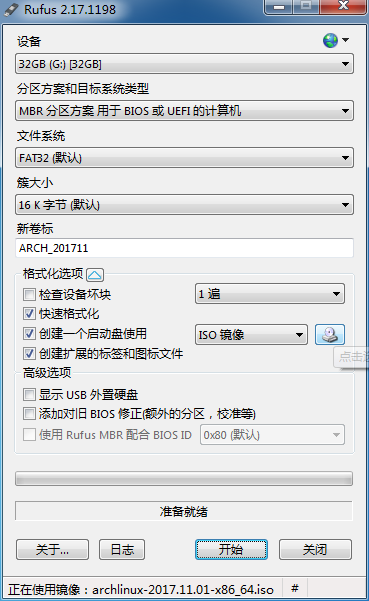
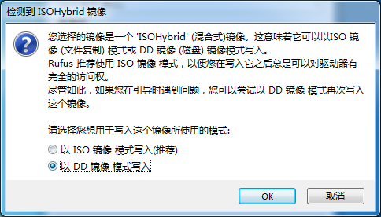

终于组装了一台电脑用于学习深度学习。折腾了几天，大体把 Arch Linux 和 PyTorch 装上了，不过还没有比较完整地验证是否安装正确。在这里大概地记录一下安装步骤，供以后重装系统时参考。
从 https://www.archlinux.org/ 下载 Arch Linux 的安装盘 ISO 文件，使用 Rufus https://rufus.akeo.ie/ 制作 USB 安装盘。
分区方案没有仔细研究，就选用默认的 “MBR 分区方案 用于 BIOS 或 UEFI 的计算机” 即可，只要能够引导起启动盘就行，对安装之后的系统应该没有影响。文件系统和簇大小都选择默认（FAT32 和 16K 字节）。

选取 ISO 并点击开始之后，Rufus 会问你选用 ISO 镜像模式还是使用 DD 镜像模式写入，选择 DD 镜像。如果选择 ISO 镜像可能会有启动盘无法引导的问题。安装的时候还遇到过因为 U 盘有坏道安装盘无法正常工作的情况，换了一个好的 U 盘后问题解决。

安装 Arch Linux 的过程参考 https://wiki.archlinux.org/index.php/Installation_guide。Arch Linux 的 Wiki 写的非常详细，有什么问题基本都可以找到，讲解的也比较细致，非常适合学习 Linux。
使用 gdisk 分区。我的分区方案如下：
| Device | File System | Mount Point |
|---|---|---|
| /dev/sda1 | fat32 | /boot |
| /dev/sda2 | ext4 | / |
| /dev/sda3 | ext4 | /home |
然后格式化：
mkfs.fat -F32 /dev/sda1
mkfs.ext4 /dev/sda2
mkfs.ext4 /dev/sda3
# 挂载分区
mount /dev/sda2 /mnt/
mkdir /mnt/boot /mnt/home
mount /dev/sda1 /mnt/boot
mount /dev/sda2 /mnt/home
# 安装基础软件包
pacstrap /mnt base base-devel vim net-tools sudo dialog iw wireless_tools wpa_supplicant networkmanager efivar
# 生成 fstab
genfstab -U /mnt >> /mnt/etc/fstab
# 更改根目录环境，从安装盘环境切换到硬盘上系统的环境
arch-chroot /mnt
一些基本的配置：
# 配置时区
ln -s /usr/share/zoneinfo/Asia/Shanghai /etc/localtime
# 用系统时钟设置硬件时钟
hwclock --systohc
# 生成 locale
# 编辑 /etc/locale.gen，需要哪些 locale 就去掉它们的注释
locale-gen
新建 /etc/locale.conf，内容如下：
# /etc/locale.conf
LANG=en_US.UTF-8
根据需要修改 /etc/hostname 和 /etc/hosts 文件。
如果需要生成 initramfs，运行 mkinitcpio。通常不需要这么做，因为 pacstrap 已经帮你生成了 initramfs。
mkinitcpio -p linux
之前试验过各种 Boot Loader，包括 GRUB、Syslinux，最终选用了 systemd-boot，有 EFI 支持，安装起来也比较方便，和 systemd 兼容性也好。
首先验证你的 EFI 变量是正常的:
再安装 systemd-boot
bootctl --path=/boot install
编辑 /boot/loader/loader.conf：
# /boot/loader/loader.conf
default arch
timeout 3
editor 0
将 /usr/share/systemd/bootctl/arch.conf 复制到 /boot/loader/entries/arch.conf，并且用 blkid 命令找到 root 分区的 PARTUUID:
blkid -s PARTUUID -o value /dev/sda2
将 PARTUUID 填到 /boot/loader/entries/arch.conf 中相应的位置，以下为我的 arch.conf：
# /boot/loader/entries/arch.conf
title Arch Linux
linux /vmlinuz-linux
initrd /initramfs-linux.img
options root=PARTUUID=6aa5e0aa-ce1b-4664-a047-9c594322f804 rootfstype=ext4 add_efi_memmap
initrd /intel-ucode.img
注意其中的 initrd 这一行开启 intel microcode update，如果你使用 Intel CPU，建议开启这个特性。当然这里需要安装 intel-ucode 包。
pacman -S intel-ucode
# Exit chroot
exit
umount -R /mnt
shutdown -r now
创建一个新用户，并且设置密码。注意这里将用户添加到 wheel 组里，以便可以 sudo。
useradd -m -g user -G wheel taot
passwd taot
修改 /etc/sudoers (去掉下面这行的注释):
## Uncomment to allow members of group wheel to execute any command
# %wheel ALL=(ALL) ALL
安装 nvidia 驱动 (不确定这步是否需要。因为之前的笔记中记了，这里暂且写上)
pacman -S nvidia mesa-libgl
安装 Mate 桌面
pacman -S mate mate-extra
安装 gdm，enable 之后重启，开机的时候就有图形化登录界面了。gdm 虽然比较大，但是不需要配置，安装上后只要 enable 以下就可以用。
pacman -S gdm
systemctl enable gdm
安装 yaourt。yaourt 是一个让你可以简便地安装 AUR 包的工具，具体步骤在这里就不写了。
安装输入法:
pacman -S fcitx-im
yaourt -S fcitx-sogoupinyin
下载 Nvidia 官方提供的驱动，安装后重启。注意不要使用安装程序生成的 Xorg.conf，可能会造成无法进入 X 的问题。
2017-11-14 更新：NVidia 官方驱动在 pacman 更新 Linux 内核后无法工作，可能需要重新装一遍驱动，没有测试。直接装了 pacman 上的 nvidia-dkms 包，可以正常工作。
安装 CUDA 和 cuDNN。当前 Arch Linux 的 rolling release （2017-11-05）中是 CUDA 9， 和 cuDNN 7，装了 PyTorch 之后似乎是好用的（简单试验了一下，未做进一步验证，可能后面会发现问题）。本来打算在 Nvidia 官网上下载 CUDA 8 和 cuDNN 6，无奈 CUDA 8 总是下载到 80% 左右就突然挂了。
pacman -S cuda cudnn
安装 miniconda。从清华大学开源软件镜像站 https://mirrors.tuna.tsinghua.edu.cn/help/anaconda/ 下载最新版 Python 3 的 Miniconda，并按照步骤说明安装。
再安装 PyTorch (http://pytorch.org)
conda install pytorch torchvision cuda80 -c soumith
如果安装出现问题，则可以删掉 miniconda, 再重新安装 miniconda 和 PyTorch。
简单测试一下:
import torch
import numpy as np
a = torch.FloatTensor(1).cuda()
b = torch.FloatTensor(1).cuda()
a + b